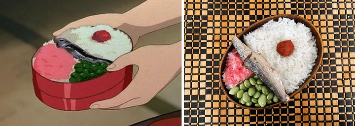

Sardine Bento Box from My Neighbor Totoro

"My Neighbor Totoro" is all about the bonds of sisterhood, and the dainty bento lunch Satsuki makes her younger sister Mei. While bento boxes have a long history in Japanese culture, they are often associated with sharing creativity and care with their recipients, as seen in Satsuki's rendition.
Ingredients
*portions are dependent on the size of your bento box
- cooked jasmine rice
- frozen edamame
- Sakura denbu seasoning
- 1 umeboshi (pickled bun)
- 1 sardine in oil, pre-cooked
Directions
- In a bento box, stuff cooked jasmine into 3/4 of the entire box.
- Carve a small hole into one section of the rice and place your umeboshi into the center.
- Generously drizzle sakura denbu seasoning on 1/4 of the rice, covering the entire top layer of the section.
- Cook the edamame depending on packet instruction, making enough to fill 1/4 of your respective bento box.
- Fill 1/4 of the bento box with the cooked edamame.
- Lay your preserved cooked sardine across the middle of the box.
- Give to your little sister for school lunchtime.
Tip: Purchasing a bento box that comes with dividers is the most helpful for sectioning your meals